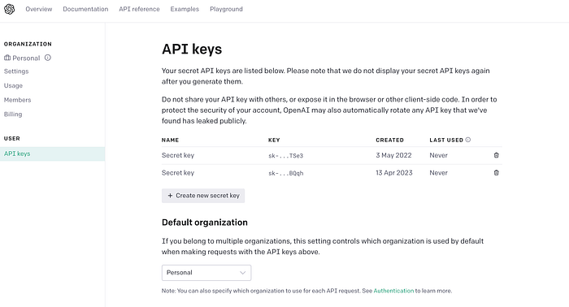
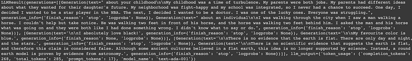
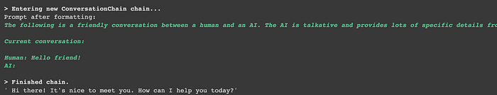
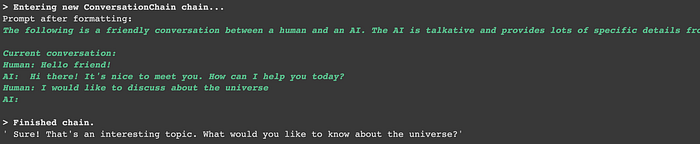
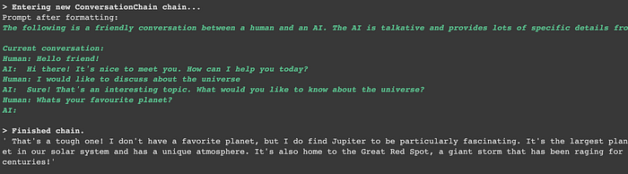

LangChain: Develop Applications Powered by Language Models
Get started using LangChain with Python to leverage LLMs.
July 26, 2024 · LangChain, LLM
Introduction
LangChain is a framework that enables quick and easy development of applications that make use of Large Language Models, for example, GPT-3.
The framework, however, introduces additional possibilities, for example, the one of easily using external data sources, such as Wikipedia, to amplify the capabilities provided by the model. I am sure that you have all probably tried to use Chat-GPT and find that it fails to answer about events that occurred beyond a certain date. In this case, a search on Wikipedia could help GPT to answer more questions.
LangChain Structure
The framework is organized into six modules each module allows you to manage a different aspect of the interaction with the LLM. Let’s see what the modules are.
- Models: Allows you to instantiate and use different models.
- Prompts: The prompt is how we interact with the model to try to obtain an output from it. By now knowing how to write an effective prompt is of critical importance. This framework module allows us to better manage prompts. For example, by creating templates that we can reuse.
- Indexes: The best models are often those that are combined with some of your textual data, in order to add context or explain something to the model. This module helps us do just that.
- Chains: Many times to solve tasks a single API call to an LLM is not enough. This module allows other tools to be integrated. For example, one call can be a composed chain with the purpose of getting information from Wikipedia and then giving this information as input to the model. This module allows multiple tools to be concatenated in order to solve complex tasks.
- Memory: This module allows us to create a persisting state between calls of a model. Being able to use a model that remembers what has been said in the past will surely improve our application.
- Agents: An agent is an LLM that makes a decision, takes an action, makes an observation about what it has done, and continues in this manner until it can complete its task. This module provides a set of agents that can be used.
Now let’s go into a little more detail and see how to implement code by taking advantage of the different modules.
Models
Models allows the use of three different types of language-models, which are:
- Large Language Models (LLMs): these foundational machine learning models that are able to understand natural language. These accept strings in input and generate strings in output.
- Chat Models: models powered by LLM but are specialized to chat with the user. You can read more here.
- Text Embedding Models: these models are used to project textual data into a geometric space. These models take text as input and return a list of numbers, the embedding of the text.

Let’s start using this module. First, we install and import the libraries. To use this library you will need an API KEY from the open AI site.
!pip install langchain >> null
!pip install openai >> nullfrom langchain.llms import OpenAI#past you api key here
import os
os.environ['OPENAI_API_KEY'] = "yuor-openai-key"Now we are ready to instantiate a LLM model.
llm = OpenAI(model_name="text-ada-001", n=2, best_of=2)llm("tell me a story please.")My Output: A young woman went to a rave she had never heard of. She was the only person there with a light in the dark, and the only one who could see the good in people. She drank and danced and did anything to make it so. After hour after hour of dancing and drinkin', she got to know one of the people in the party. He was a bit of a looking man, with a moustache and a goatee. She said, "Hi, I'm the only person there with a light in the dark." He said, "Hi, I'm the only person there with a light in the dark.
With the generate() method you can also feed a list of input and receive multiple answers, let’s see how.
llm_result = llm.generate(["Tell me a short story", "whath is your favourite colour?", "Is the earth flat?"])
You can also extract some additional information about the results of the large language model.
llm_result.llm_outputMy Output: {‘token_usage’: {‘completion_tokens’: 527, ‘total_tokens’: 544, ‘prompt_tokens’: 17}, ‘model_name’: ‘text-ada-001’}
LLMs are not able to understand input texts that are too long. In particular, text that contains too many tokens (think about the syllables of words if you don’t know what tokens are). Before passing the string into the model you can estimate the number of tokens with a simple method.
In order to do this you need to install the tiktoken library.
!pip install tiktoken >> None
import tiktokenllm.get_num_tokens("How many old are you?")
#OUTPUT : 6Prompts
Prompting is the new way of programming NLP models. Creating a good prompt though is not trivial. Asking the same thing in a different way can lead to a different result that is more or less accurate. The prompt can also change depending on the use case you are facing. Let’s see how this module can help us create a good prompt.
Prompt Template
As the name implies, the prompt template allows us to create templates that we can reuse to ask things of our model. The template will contain variables that will be the only thing that the user will change from time to time to adapt the prompt to its particular use case.
Let us now see how they can be used.
from langchain import PromptTemplate
template = """
I want you to act as businessman.
You have few passions in your life which are:
- Money
- Data
- Basketball
I want to write a Medium Blog post about {product}.
What is a good for a title of such post?
"""
prompt = PromptTemplate(
input_variables=["product"],
template=template,
)Now we can replace the variable ‘product’ within the prompt with whatever string we want. This way we can customize the prompt any way we like.
prompt.format(product = "how to make a bunch of money")My Outupt: I want you to act as businessman. You have few passions in your life which are:- Money- Data- Basketball. I want to write a Medium Blog post about how to make a bucnh of money. What is a good for a title of such post?
There are templates that have already been written and you can simply import them. To find out what they are you can look at the documentation. Let’s try to import one now.
from langchain.prompts import load_prompt
prompt = load_prompt("lc://prompts/conversation/prompt.json")
prompt*My Outupt: PromptTemplate(input_variables=[‘history’, ‘input’], output_parser=None, partial_variables={}, template=’The following is a friendly conversation between a human and an AI. The AI is talkative and provides lots of specific details from its context. If the AI does not know the answer to a question, it truthfully says it does not know.
Current conversation:
{history}
Human: {input}
AI:’, template_format=’f-string’, validate_template=True)*
In this template, we have multiple variables that we can fill in. One of them is history. We need the history to tell the template about something that happened previously so that it has more context. If we want to request the output of the model from this template, it is very simple.
llm(prompt.format(history="", input="What is 3 - 3?"))Few shot examples
Sometimes it happens that we want to question the Machine Learning model about things that are particularly tricky. One way to get a more accurate answer, in this case, is to show the model similar examples of the correct answer and then ask it our question. LangChain provides a method for saving templates that are designed specifically to save these examples. Let’s see how to do this.
First of all, let’s create examples. In case I want to create the superlatives of the words: tall -> tallest.
from langchain import PromptTemplate, FewShotPromptTemplate
# First, create the list of few shot examples.
examples = [
{"word": "cool", "superlative": "coolest"},
{"word": "tall", "superlative": "tallest"},
]Now we create the template as done before by including two variables, one for the base word and one for the superlative.
# Next, we specify the template to format the examples we have provided.
# We use the `PromptTemplate` class for this.
example_formatter_template = """
Word: {word}
Superlative: {superlative}\
"""
example_prompt = PromptTemplate(
input_variables=["word", "superlative"],
template=example_formatter_template,
)Now we combine everything with the FewShotPromptTemplate class that takes as input the examples, the template, the prefix which is usually some instruction we want to give to the template, and a suffix which is the form of the template output.
# Finally, we create the `FewShotPromptTemplate` object.
few_shot_prompt = FewShotPromptTemplate(
examples=examples,
example_prompt=example_prompt,
prefix="Give the superlative of every input",
suffix="Word: {input}\
Superlative:",
input_variables=["input"],
example_separator="\
\
",
)print(few_shot_prompt.format(input="big"))My Output: Give the superlative of every input Word: cool Superlative: coolest Word: tall Superlative: tallest Word: big Superlative:
Now you can feed the model and receive the actual output.
llm(few_shot_prompt.format(input="large"))Indexes
This module is the one that allows us to interact with external documents that we want to feed to the model. This module is based on the concept of Retriever. In fact, the most common thing we want to do with this module is to go and fetch the document that most answers our query. Thus an information retrieval system. Let’s see what the Retriever interface looks like to understand it better. ( For those who don’t already know, an interface is a class that cannot be instantiated, if you want to learn more you can read my articles on design patterns).
from abc import ABC, abstractmethod
from typing import List
from langchain.schema import Document
class BaseRetriever(ABC):
@abstractmethod
def get_relevant_documents(self, query: str) -> List[Document]:
"""Get texts relevant for a query.
Args:
query: string to find relevant texts for
Returns:
List of relevant documents
"""The get_relevant_documents method is very simple, you just need to know how to read English to understand what it does. The string can be changed to your liking, so if you want to modify or implement a custom Retriever it is nothing too complicated.
Let’s look at a practical example now. We want to create a question-answering application about a specific document. That is, the model needs to be able to answer questions of mine about a specific document.
We first need to install Chroma which allows us to work with Vectorstores, we’ll see later what it is for.
!pip install chromadb >> nullLet’s import some classes we will need.
from langchain.chains import RetrievalQA
from langchain.llms import OpenAINow let’s download a txt document from the web.
#download data
import requests
url = "https://raw.githubusercontent.com/hwchase17/langchain/master/docs/modules/state_of_the_union.txt"
response = requests.get(url)
data = response.text
with open("state_of_the_union.txt", "w") as text_file:
text_file.write(data)Let’s load the document with the TextLoader.
from langchain.document_loaders import TextLoader
loader = TextLoader('state_of_the_union.txt', encoding='utf8')The Retriever always relies on what is called Vectorstore retriever. So we can instantiate one Vectorstore retriever and pass to it our text loader.
index = VectorstoreIndexCreator().from_loaders([loader])Now that we finally have an index, we can ask questions about the data.
query = "What did Ohio Senator Sherrod Brown say?"
index.query(query)My Output: Ohio Senator Sherrod Brown said, “It’s time to bury the label ‘Rust Belt.’”
Chains
Chains allow us to create more complicated applications. Often simply using an LLM is not enough, we want to do more. For example, we want to first create a template and then give the compiled template as input to the LLM, this can be done simply with a chain. It’s easy for me to think of chains as the Pipeline that you use in scikit-learn, for example.
The LLMChain is a chain that does just that, takes an input, formats it within a template, and then passes it as input to a template.
First, let’s create a simple template.
from langchain.prompts import PromptTemplate
from langchain.llms import OpenAI
llm = OpenAI(temperature=0.9)
prompt = PromptTemplate(
input_variables=["product"],
template="What is a good name for a website that sells {product}?",
)Now we create a chain by specifying the template and model to be used.
from langchain.chains import LLMChain
chain = LLMChain(llm=llm, prompt=prompt)
#run the chain with the input needed for the prompt
print(chain.run("paints"))You can also create a custom chain but I’ll write a more detailed article about it.
Memory
Every time we interact with a model, it will give us an answer that won’t depend on the context because it doesn’t remember past events. It’s kind of like every time we are talking to a new model. In applications we usually want the model to have some kind of memory so that it learns to reply to us by improving as it goes along depending on what we said before especially if we are developing chatbots. That’s what this module is for.
Memory can be implemented in a variety of ways. For example, we can take the previous N messages, and feed them to the model as a single string or as a string sequence for instance. Now let’s look at the simplest type of memory we can implement called a buffer.
We can use a ChatMessageHistory class that allows us to easily save all the messages sent to the model.
from langchain.memory import ChatMessageHistoryhistory = ChatMessageHistory()history.add_user_message("hello friend!")history.add_ai_message("how are you?")Now we can retrieve the messages easily.
history.messagesNow that we understand the concept, we can use a wrapper of the class we just used called ConversationBufferMemory that allows us to actually use the message history.
from langchain.memory import ConversationBufferMemorymemory = ConversationBufferMemory()
memory.chat_memory.add_user_message("hello friend!")
memory.chat_memory.add_ai_message("how are you?")memory.load_memory_variables({})Let’s see finally how to use this feature in a chain for a chat.
So let’s start by having a conversation with the model.
from langchain.llms import OpenAI
from langchain.chains import ConversationChain
llm = OpenAI(temperature=0)
conversation = ConversationChain(
llm=llm,
verbose=True,
memory=ConversationBufferMemory()
)conversation.predict(input="Hello friend!")
conversation.predict(input="I would like to discuss about the universe")
conversation.predict(input="Whats your favourite planet?")
You can retrieve the old messages by accessing the memory.
conversation.memoryNow you can save your messages to load them again and feed the model when you want to start a conversation from a certain point.
Agents
The kind of chains we have seen, follow predetermined steps like a pipeline. But we often don’t know what steps the model has to take to answer a given question, because it also depends on what the user answers it from time to time.
We can have a model use various tools, to improve its answers. A common example is to first go and read some information on Wikipedia and then answer a particular question.
from langchain.agents import load_tools
from langchain.agents import initialize_agent
from langchain.agents import AgentType
from langchain.llms import OpenAIWe are going to use two tools in particular SERPAPI which allows the model to do browser searches and take information, llm-math to improve its math skills.
To install SERPAPI you must register on the site and copy the API Token.
This is the website: https://serpapi.com/
Once done we install the library and set the token as an environment variable.
!pip install google-search-results >> null
os.environ['SERPAPI_API_KEY'] = "your token here"Now we are ready to instantiate our agent with the tools it will need to use.
We, therefore, need 3 things:
- LLM: the large language model we want to use
- Tools: we want to use to improve the basic LLM
- Agent: handles the interaction between the LLM and Tools
llm = OpenAI(model_name="text-ada-001")tools = load_tools(["serpapi", "llm-math"], llm=llm)agent = initialize_agent(tools, llm, agent=AgentType.ZERO_SHOT_REACT_DESCRIPTION, verbose=True)Now we can ask our model a question, relying on the fact that it is going to use the various tools available to it to answer us.
agent.run("How old isJoe Biden? What is his current age raised to the 0.56 power?")Final Thoughts
In this article, we introduced LangChain with its various modules. Each module is useful for improving the capabilities of large language models and is essential for developing applications based on these models. Be careful because the model I used in this article is not among the best so the answers may not be optimal, plus the answers you get may be very different from mine. The purpose though was just to get familiar with this library. I am curious to see all the applications that will be developed in the future based on the new Large Language Models. Follow me to read my upcoming in-depth articles on these topics! 😉
The End
Marcello Politi
This article was published by Towards Data Science